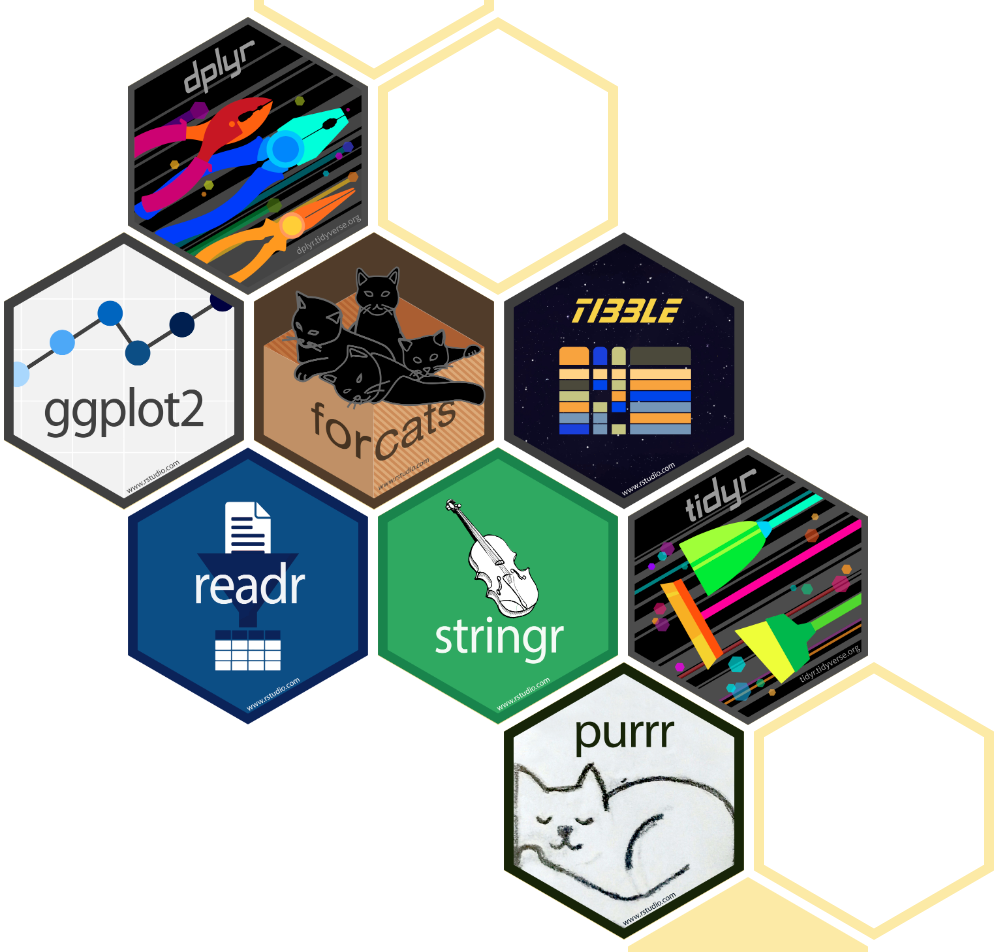
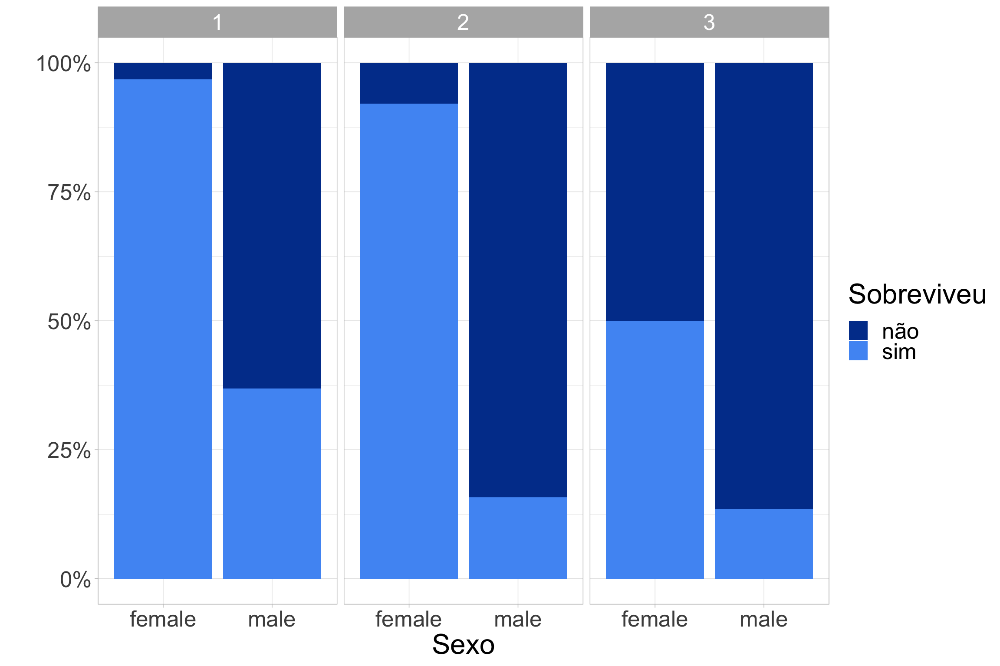
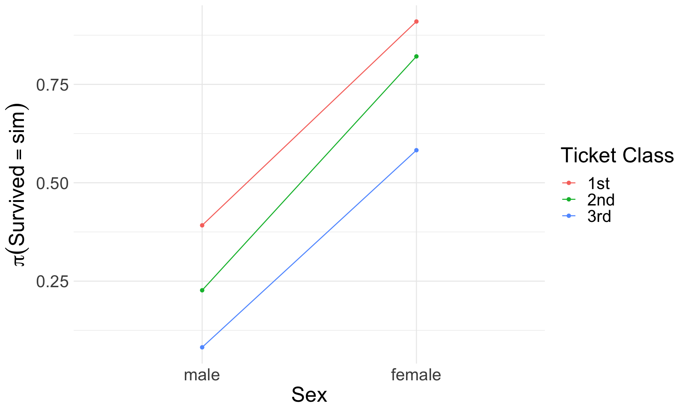
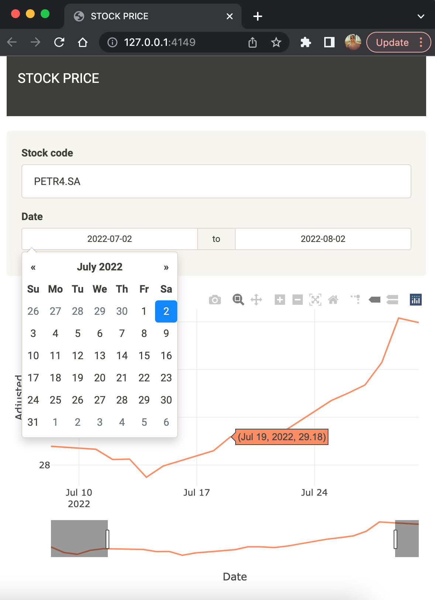
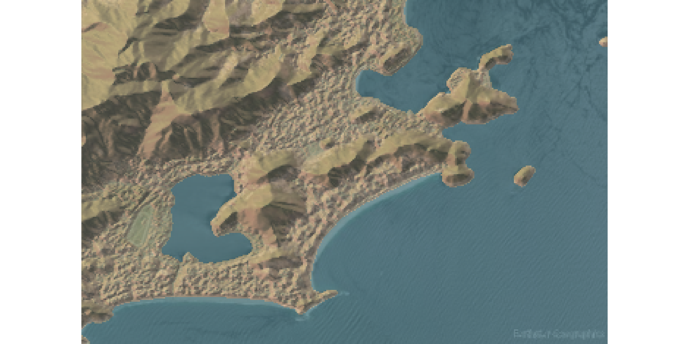

[1] "versão 4"Linguagem R
Além do #rstats
Thiago Pires
Thiago Pires
Cientísta de Dados (CIO/IBM)

Formação:
- Estatística (UERJ)
- MSc. Epidemiologia (ENSP/FIOCRUZ)
- DSc. Engenharia Biomédica (COPPE/UFRJ)
Linguagem R
- A linguagem R foi derivada da linguagem S.
- Foi lançada em 1993 pelos dois estatísticos Ross Ihaka e Robert Gentleman da Universidade de Auckland, Nova Zelândia
- Atualmente na versão 4.2

Linguagem R
Sintaxe
Linguagem R
Sintaxe
Tidyverse e RStudio

Tidyverseé uma coleção de pacotes desenvolvidos pela RStudio e projetados para ciência de dados. Todos estes pacotes tentam compartilhar uma mesma sintaxe e estrutura de dados.
dplyr:: utilizado na manipulação de dados
Média, desvio-padrão e N da idade, segundo sexo
# A tibble: 2 × 4
Sex Média `Desvio-padrão` N
<chr> <dbl> <dbl> <int>
1 female 25 13.6 81
2 male 31.6 14.1 468Percentual de mortos, segundo sexo
ggplot2:: utilizado na visualização de dados
Percentual de mortos e vivos, segundo sexo e classe
library(ggplot2)
titanic::titanic_train |>
ggplot() +
aes(Sex, ..count../sum(..count..),
group = Survived,
fill = as.factor(Survived)) +
geom_bar(position = "fill") +
facet_grid(~Pclass) +
scale_y_continuous(labels = scales::percent) +
scale_fill_manual(values = c("#003f9a", "#5099f4"),
labels = c("não", "sim")) +
labs(x = "Sexo", y = "", fill = "Sobreviveu") +
theme_light() +
theme(text = element_text(size = 24))
stringr:: e forcats::
readr::, tidyr:: e lubridate:: para mais manipulações
# A tibble: 1 × 931
Country/Regi…¹ 1/22/…² 1/23/…³ 1/24/…⁴ 1/25/…⁵ 1/26/…⁶ 1/27/…⁷ 1/28/…⁸ 1/29/…⁹
<chr> <dbl> <dbl> <dbl> <dbl> <dbl> <dbl> <dbl> <dbl>
1 Brazil 0 0 0 0 0 0 0 0
# … with 922 more variables: `1/30/20` <dbl>, `1/31/20` <dbl>, `2/1/20` <dbl>,
# `2/2/20` <dbl>, `2/3/20` <dbl>, `2/4/20` <dbl>, `2/5/20` <dbl>,
# `2/6/20` <dbl>, `2/7/20` <dbl>, `2/8/20` <dbl>, `2/9/20` <dbl>,
# `2/10/20` <dbl>, `2/11/20` <dbl>, `2/12/20` <dbl>, `2/13/20` <dbl>,
# `2/14/20` <dbl>, `2/15/20` <dbl>, `2/16/20` <dbl>, `2/17/20` <dbl>,
# `2/18/20` <dbl>, `2/19/20` <dbl>, `2/20/20` <dbl>, `2/21/20` <dbl>,
# `2/22/20` <dbl>, `2/23/20` <dbl>, `2/24/20` <dbl>, `2/25/20` <dbl>, …
# ℹ Use `colnames()` to see all variable names# A tibble: 5 × 4
# Groups: country [1]
country date cumulate value
<chr> <date> <dbl> <dbl>
1 Brazil 2020-01-22 0 NA
2 Brazil 2020-01-23 0 0
3 Brazil 2020-01-24 0 0
4 Brazil 2020-01-25 0 0
5 Brazil 2020-01-26 0 0ggplot2:: na visualização de casos de COVID 19
covid19 |>
dplyr::mutate(moving_average = zoo::rollmean(value, 7, align = "right", fill = NA)) |>
ggplot2::ggplot() +
ggplot2::aes(date, moving_average) +
ggplot2::geom_line() +
ggplot2::theme_minimal() +
ggplot2::labs(x = "Data",
y = "Média móvel casos COVID 19") +
theme(text = element_text(size = 22))plotly:: gráficos dinâmicos
covid19 |>
dplyr::mutate(moving_average = zoo::rollmean(value, 7, align = "right", fill = NA)) |>
plotly::plot_ly(x = ~date, y = ~moving_average,
type = "scatter", mode = "lines") |>
plotly::layout(xaxis = list(title = "Date"),
yaxis = list(title = "Média móvel casos COVID 19"),
font = list(size = 20), margin = list(t = 100)) |>
plotly::rangeslider() |>
widgetframe::frameWidget()leaflet:: mapas dinâmicos
library(leaflet)
locale <- dplyr::tibble(label = "IBM Hortolândia",
lat = -22.8996401,
lng = -47.2032362,
logo = "https://www.ibm.com/brand/experience-guides/developer/8f4e3cc2b5d52354a6d43c8edba1e3c9/02_8-bar-reverse.svg")
leaflet(options = list(closePopupOnClick = FALSE)) |>
setView(lng = -46.9,
lat = -22.8,
zoom = 7) |>
addTiles() |>
addPopups(data = locale,
~lng,
~lat,
options = popupOptions(closeButton = FALSE),
popup = ~paste("<img src=",
logo, "width=100%> <br>",
label))leaflet:: rota do Titanic
events <- bind_rows(
tibble(location = "Southampton (10-04-1912)",
lng = -1.4191, lat = 50.7894),
tibble(location = "Cherbourg (10-04-1912)",
lng = -1.6109, lat = 49.6445),
tibble(location = "Queenstown (11-04-1912)",
lng = -8.3211, lat = 51.8535),
tibble(location = "Naufrágio (14-04-1912)",
lng = -49.9408, lat = 41.7258),
tibble(location = "New York",
lng = -73.9655, lat = 40.6832))
leaflet() |>
setView(lng = -33.9,
lat = 46.8,
zoom = 3) |>
addTiles() |>
addCircleMarkers(data = events |> slice(1:3, 5),
label = ~location,
color = c(rep("blue", 3), "green")) |>
addMarkers(data = events |> slice(4),
icon = list(
iconUrl = "resources/images/sinking-ship.jpeg",
iconSize = c(50, 50)),
label = ~location) |>
addPolylines(data = events, ~lng, ~lat) |>
widgetframe::frameWidget()DBI::, RJDBC:: e dbplyr:: conectando com o DB2 na IBM Cloud
library(dbplyr)
# Ler variáveis de ambiente
readRenviron("../.Renviron")
# Conexão com o DB2
drv <-
RJDBC::JDBC("com.ibm.db2.jcc.DB2Driver",
"../jars/db2jcc4.jar")
host <- Sys.getenv("DB2_HOST")
user <- Sys.getenv("DB2_USER")
password <- Sys.getenv("DB2_PASSWORD")
uri <-
sprintf("jdbc:db2://%s/bludb:user=%s;password=%s;sslConnection=true;",
host, user, password)
db2 <-
DBI::dbConnect(drv, uri)
# Enviando tabela para o DB2
DBI::dbWriteTable(db2, "COVID19",
value = na.omit(covid19),
overwrite = TRUE)
# Fazendo consulas no DB2
dplyr::tbl(db2, "COVID19") |>
dplyr::filter(dplyr::between(DATE,
"2022-06-07",
"2022-06-15")) |>
dplyr::select(COUNTRY, DATE, VALUE)# Source: SQL [9 x 3]
# Database: JDBCConnection
COUNTRY DATE VALUE
<chr> <chr> <dbl>
1 Brazil 2022-06-07 71045
2 Brazil 2022-06-08 49614
3 Brazil 2022-06-09 45073
4 Brazil 2022-06-10 56491
5 Brazil 2022-06-11 27796
6 Brazil 2022-06-12 11728
7 Brazil 2022-06-13 40173
8 Brazil 2022-06-14 44441
9 Brazil 2022-06-15 70290tidymodels:: aprendizado supervisionado
library(tidymodels)
set.seed(555)
titanic <-
titanic::titanic_train |>
dplyr::mutate(Pclass = factor(Pclass, labels = c("1st", "2nd", "3rd")),
Survived = factor(Survived, labels = c("não", "sim")))
# Separar 3/4 dos dados para treino
data_split <-
initial_split(titanic, prop = 3/4)
train_data <- training(data_split)
test_data <- testing(data_split)
# Ajuste do modelo
lr_mod <-
logistic_reg() |>
set_engine("glm")
lr_fit <-
lr_mod |>
fit(Survived ~ Sex + Pclass, data = train_data)
lr_fit |> broom::tidy()# A tibble: 4 × 5
term estimate std.error statistic p.value
<chr> <dbl> <dbl> <dbl> <dbl>
1 (Intercept) 2.31 0.257 9.00 2.28e-19
2 Sexmale -2.75 0.219 -12.6 2.89e-36
3 Pclass2nd -0.787 0.284 -2.77 5.65e- 3
4 Pclass3rd -1.98 0.253 -7.82 5.28e-15tidymodels:: visualizando o modelo
newdata <-
expand.grid(Pclass = c("1st", "2nd", "3rd"),
Sex = c("male", "female"))
pihat <-
(lr_fit |> predict(newdata, type = "prob")) |>
pull(.pred_sim)
newdata |> mutate(Pihat = pihat) |>
ggplot(aes(Sex, Pihat,
group = Pclass,
colour = Pclass)) +
geom_line() + geom_point() +
labs(x = "Sex", y = expression(pi(Survived == sim)),
colour = "Ticket Class") +
theme_minimal() +
theme(text = element_text(size = 22))
tidymodels:: avaliando o modelo
# A tibble: 2 × 3
.metric .estimator .estimate
<chr> <chr> <dbl>
1 accuracy binary 0.762
2 f_meas binary 0.803pins:: versionando recursos no cloud object storage (COS) na IBM Cloud
Versionando o modelo selecionado para a predição da probabilidade de sobreviver ao desastre do titanic.
# Obtendo o modelo
saved_lr_fit <- tidypredict::parse_model(lr_fit)
# Conexão com o COS
board <- pins::board_s3(bucket = Sys.getenv("COS_BUCKET"),
region = Sys.getenv("COS_REGION"),
access_key = Sys.getenv("COS_ACCESS_KEY_ID"),
secret_access_key = Sys.getenv("COS_SECRET_ACCESS_KEY"),
endpoint = Sys.getenv("COS_ENDPOINT"))Lendo o modelo do COS e fazendo a predição
plumber:: criando api
# plumber.R
#* @apiTitle Prediction Survived in Titanic Disaster
#* @param sex Sex
#* @param pclass Class
#* @post /predict
function(sex, pclass) {
board <- pins::board_s3(bucket = Sys.getenv("COS_BUCKET"),
region = Sys.getenv("COS_REGION"),
access_key = Sys.getenv("COS_ACCESS_KEY_ID"),
secret_access_key = Sys.getenv("COS_SECRET_ACCESS_KEY"),
endpoint = Sys.getenv("COS_ENDPOINT"))
model <- board |> pins::pin_read("titanic-model")
input <- data.frame(Sex = sex, Pclass = pclass)
pred <- tidypredict::tidypredict_to_column(input, model)
return(pred)
}Executando a api
httr:: fazendo requisições
[
{
"Sex": "female",
"Pclass": "1st",
"fit": 0.9097
}
][
{
"Sex": "male",
"Pclass": "3rd",
"fit": 0.082
}
] quantmod:: preços de ações
dataStocks <- function(code, from, to) {
stock <-
quantmod::getSymbols(code,
src = "yahoo",
from = from,
to = to,
auto.assign = FALSE)
stock <-
stock |>
as.data.frame() |>
tibble::rownames_to_column(var = "Date") |>
dplyr::as_tibble() |>
dplyr::select(dplyr::matches("Date|Adjusted")) |>
dplyr::mutate(Date = Date |> lubridate::as_date()) |>
dplyr::rename(Adjusted = 2)
return(stock)
}shiny:: criando aplicações web
shiny:: app para obter preços de ações

library(shiny)
library(shinythemes)
source("dataStocks.R")
start_value <- Sys.Date() - 31
end_value <- Sys.Date()
ui <- fluidPage(
theme = shinytheme("sandstone"),
navbarPage("STOCK PRICE"),
sidebarLayout(
sidebarPanel(
textInput("code", "Stock code", value = "PETR4.SA"),
dateRangeInput("date", "Date",
start = start_value,
end = end_value)
),
mainPanel(
plotly::plotlyOutput("plot")
)
)
)
server <- function(input, output, session) {
data_stock <- reactive({
validate(
need(input$code, "Please type a stock code!"),
need(input$date[1], "Please choose a start date!"),
need(input$date[2], "Please choose a end date!"))
dataStocks(input$code, input$date[1], input$date[2])
})
output$plot <- plotly::renderPlotly({
plotly::plot_ly(data_stock(),
x = ~Date,
y = ~Adjusted,
color = "orange",
mode = "lines",
type = "scatter") |>
plotly::rangeslider()
})
}
shinyApp(ui, server)R com docker
Dockerfile
FROM openwhisk/dockerskeleton
ARG NOT_CRAN=true
ARG ARROW_R_DEV=true
RUN apk update && apk add R R-dev R-doc \
build-base libsodium-dev autoconf automake bash \
cmake g++ gcc make libxml2-dev
RUN R -e "install.packages(c('jsonlite', 'tidypredict', 'yaml', \
'pins', 'paws.storage'), repos = 'http://cran.rstudio.com/')"Build
podman build -t quay.io/th1460/titanic-classifier .Push para um registry
podman login -u <user> -p <password> docker.io/th1460/titanic-classifier
podman push docker.io/th1460/titanic-classifierR e IBM Cloud Functions
IBM Cloud Functions service is an event-driven compute platform, also referred to as Serverless computing, or as Function as a Service (FaaS), that runs code in response to events or direct invocations.
exec
#!/bin/bash
# run R script
chmod +x script.R # turn executable
echo "$@" > input.json # set input
./script.R # run scriptscript.R
#!/usr/bin/env Rscript
readRenviron(".Renviron")
# load model
board <- pins::board_s3(bucket = Sys.getenv("COS_BUCKET"),
region = Sys.getenv("COS_REGION"),
access_key = Sys.getenv("COS_ACCESS_KEY_ID"),
secret_access_key = Sys.getenv("COS_SECRET_ACCESS_KEY"),
endpoint = Sys.getenv("COS_ENDPOINT"))
model <- pins::pin_read(board, "titanic-model")
# input
input <- jsonlite::fromJSON("input.json", flatten = FALSE)
# predict
pred <- tidypredict::tidypredict_to_column(as.data.frame(input), model)
# output
jsonlite::stream_out(pred, verbose = FALSE)Deploy do modelo na IBM Cloud Functions
Login na IBM Cloud
ibmcloud login -sso
ibmcloud target --cfEmpacotar os arquivos para o deploy
zip -r titanic.zip exec script.R .RenvironDeploy
ibmcloud fn action create titanic-classifier titanic.zip \
--docker th1460/titanic-classifier --web trueDescobrindo qual é a url
ibmcloud fn action get titanic-classifier --urlrayshader:: mapas em 3D
# Define bounding box with longitude/latitude coordinates
bbox <- list(
p2 = list(long = -43.2328217452992, lat = -22.99560928307949),
p1 = list(long = -43.133008448808454, lat = -22.930329210944166)
)
leaflet::leaflet() |>
leaflet::addTiles() |>
leaflet::addRectangles(
lng1 = bbox$p1$long, lat1 = bbox$p1$lat,
lng2 = bbox$p2$long, lat2 = bbox$p2$lat,
fillColor = "transparent"
) |>
leaflet::fitBounds(
lng1 = bbox$p1$long, lat1 = bbox$p1$lat,
lng2 = bbox$p2$long, lat2 = bbox$p2$lat,
)rayshader:: mapas em 3D
source("../src/define_image_size.R")
source("../src/get_arcgis_map_image.R")
image_size <- define_image_size(bbox, major_dim = 600)
# Fetch overlay image
overlay_file <- "../data/rj_overlay.png"
get_arcgis_map_image(bbox, map_type = "World_Imagery", file = overlay_file,
width = image_size$width, height = image_size$height,
sr_bbox = 4326)
overlay_img <- png::readPNG(overlay_file)
# Calculate rayshader layers
watermap <- rayshader::detect_water(elev_matrix)
# Plot 2D with texture
elev_matrix |>
rayshader::sphere_shade(texture = "imhof4") |>
rayshader::add_water(watermap, color = "imhof4") |>
rayshader::add_overlay(overlay_img, alphalayer = 0.5) |>
rayshader::plot_map()
rayshader:: mapas em 3D
# Plot 3D
zscale <- 30
rgl::clear3d()
elev_matrix |>
rayshader::sphere_shade(texture = "imhof4") |>
rayshader::add_water(watermap, color = "imhof4") |>
rayshader::add_overlay(overlay_img, alphalayer = .8) |>
plot_3d(elev_matrix, zscale = zscale, windowsize = c(1500, 1200),
water = TRUE, soliddepth = -max(elev_matrix)/zscale, wateralpha = 1,
theta = 25, phi = 30, zoom = 0.65, fov = 60)
rayshader::render_snapshot("../data/rj-3d.png")purrr:: programação funcional
Fazendo loop com for
Fazendo loop com map_dbl
tensorflow:: deep learning
Linguagem R testada com outros recursos da IBM Cloud
- Kubernetes/Openshift
- Code Engine
- Cloud Pak for Data
- App ID
Projetos pessoais com R
- Autenticação de aplicações shiny com App ID: github.com/IBM/AppIdR
- Autenticação de aplicações shiny com W3ID: github.ibm.com/Thiago-Pires/w3idr